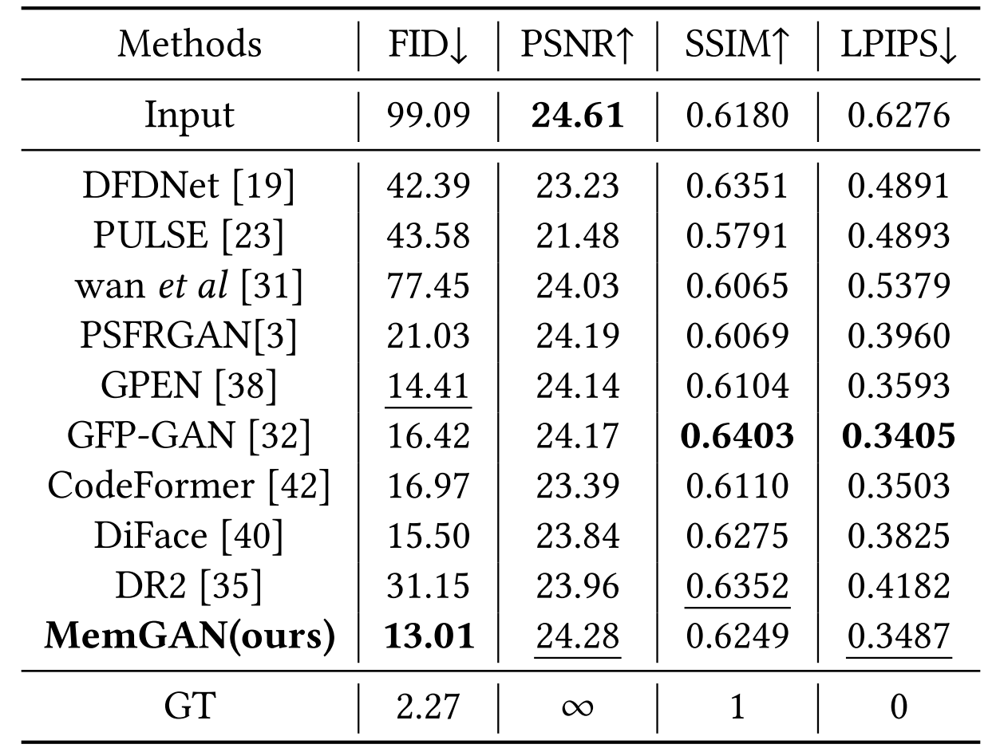
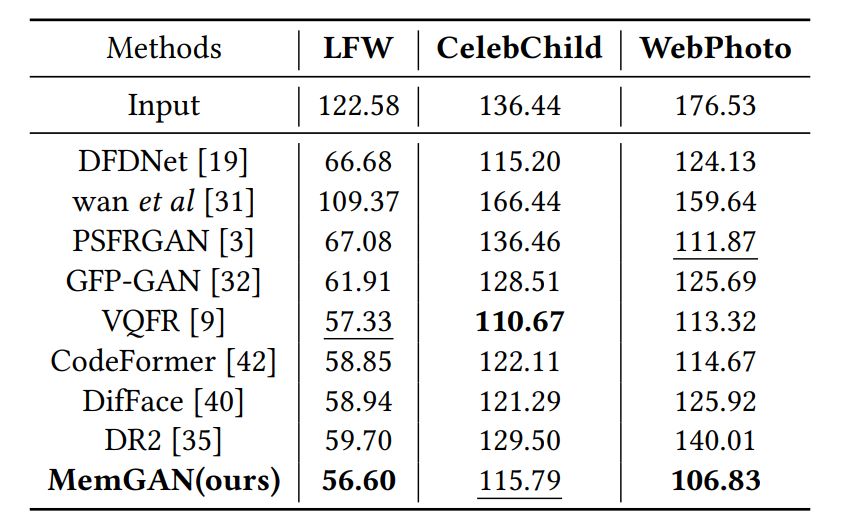

Abstract
Blind face restoration aims to recover high-quality face images from low-quality ones with complex and unknown degradation. Existing approaches have achieved promising performance by leveraging pre-trained dictionaries or generative priors. However, these methods may fail to exploit the full potential of degraded inputs and facial identity features due to complex degradation. To address this issue, we propose a novel method that explores the correlation of degraded spatial identity features by learning a general representation using memory network. Specifically, our approach enhances degraded features with more identity by leveraging similar facial features retrieved from memory network. We also propose a fusion approach that fuses memorized spatial features with GAN prior features via affine transformation and blending fusion to improve fidelity and realism. Additionally, the memory network is updated online in an unsupervised manner along with other modules, which obviates the requirement for pre-training. Experimental results on synthetic and popular real-world datasets demonstrate the effectiveness of our proposed method, which achieves at least comparable and often better performance than other state-of-the-art approaches.
Paper & Code & Demo
Experimental Results
Table 1: Average FID, PSNR, SSIM, and LPIPS results on CelebA-Test dataset [22]. The best results are shown in bold and the second-best results are shown in underline.
Table 3: Average FID (the lower, the better) on three realworld datasets. The best results are shown in bold and the second-best results are shown in underline.
Result Visualization

Figure 1: Visual quality comparison of CelebA-Test. Zoom in for better view.

Figure 2: Visual quality comparison of three real-world datasets. The first four rows show the comparisons from LFW [12]; the fifth row shows the comparisons from CelebChild [32]; the sixth row shows the comparisons from WebPhoto [32]. Zoom in for better view.
Citation
@inproceedings{ning2023exploring,
title={Exploring Correlations in Degraded Spatial Identity Features for Blind Face Restoration},
author={Ning, Qian and Wu, Fangfang and Dong, Weisheng and Li, Xin and Shi, Guangming},
booktitle={Proceedings of the 31st ACM International Conference on Multimedia},
pages={37--45},
year={2023}
}
Concat
Qian Ning, Email: ningqian@stu.xidian.edu.cn
Fangfang Wu, Email: wufangfang@xidian.edu.cn
Weisheng Dong, Email: wsdong@mail.xidian.edu.cn
Xin Li, Email: xin.li@mail.wvu.edu
Guangming Shi, Email: gmshi@xidian.edu.cn